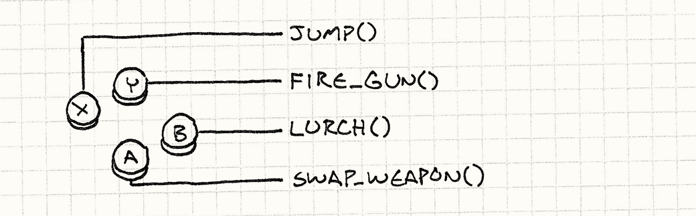
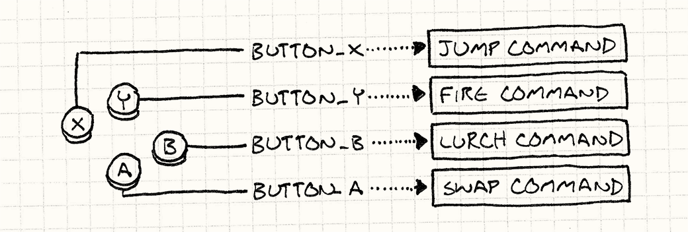
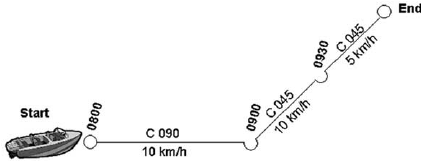
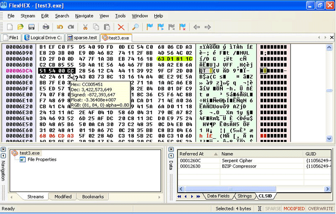

Advanced Game Networking
Wednesday, December 7, 2016
About me
First, some reminders
Latency / Bandwidth
Protocols
UDP
TCP
Most RT games: Reliable UDP
It's about logical thinking
RT strategy games
Requirements
Fairness
Determinism
Command Design Pattern

Without
Command Design Pattern

With
Undo Redo

RT simulation games
Requirements
Fun
Flow
No frustration
Client prediction

Dead reckoning

Topologies
One Server - Many Clients
+ Central authority
- Heavy load
Peer to Peer
+ Distribute the load
- More complex to synchronize
A mix of both?
For instance:
Host for gameplay events
P2P for chat
Host migration
A world without firewalls
NAT
STUN

TURN

Services
"Around the game"
Example: Profile
Requires a database
Requires a profanity checker
Example: Matchmaking
Requires a matching algorithm
Serialization
Transforming objects to/from memory buffers
Why?
Indirections (pointers)
Endianness
Optimisations, perhaps
C++
Lack of support (some RTTI though)
Usually: custom solutions
C++: custom solution
struct CharacterProfile
{
string name;
int level;
void Serialize(Serializer &serializer);
};
void CharacterProfile::Serialize(Serializer &serializer)
{
serializer << name;
serializer << level;
}
C++: Unreal Engine 4
UCLASS()
class GAME_API UCharacterProfile : public UObject
{
GENERATED_BODY()
public:
UPROPERTY(EditAnywhere, BlueprintReadWrite, Category = "Switch Variables");
string name;
UPROPERTY(EditAnywhere, BlueprintReadWrite, Category = "Switch Variables")
int level;
};
Rely on the Unreal Header Tool
C#
[Serializable]
public class CharacterProfile
{
public string name;
public int level;
}
public void Load()
{
CharacterProfile profile;
using (FileStream stream = File.OpenRead(filePath))
{
profile = formatter.Deserialize(stream) as CharacterProfile;
}
}
C#: Unity
(When writing custom editors)
void OnEnable()
{
name = serializedObject.FindProperty("name").stringValue;
level = serializedObject.FindProperty("level").intValue;
}
Binary format

Semi-structured format
Example: JSON
{
"characterProfile": {
"name": "John Doe"
"level": 42
}
}
Optimization
Am I looking in the right direction?
Architecture
Modelisation
Data packet optimization
Example: sending a number (64 bits)
Send the full value (64 bits)
Add one bit to tell whether the value is zero (1 or 65 bits)
Only send the less significant bits (from 6 to 70 bits)
Gameplay
Do not wait the response
Network camera
P2P: better ownership distribution
Infrastructure
Scalability
Being able to spread the load
No Single Points of Failure
Redundancy (load balancers, database clusters...)
Instrumentation
Being able to scale
Deployment
Environments
Being able to deploy several versions
Development, Tests, Production...
How to switch?
Logs
Useful for debugging the servers...
Metrics

Some last tips
Developing a networked game
Architecture
Modelisation
Asynchronous
Logs & metrics
Working as an online programmer
Logical thinking
Linux
Web development
Readings
Gaffer on Games | Game Networking
1500 Archers on a 28.8: Network Programming in Age of Empires and Beyond